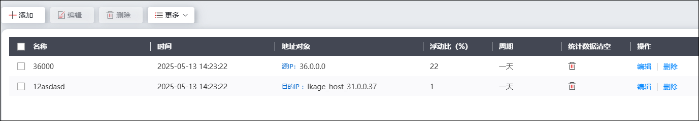
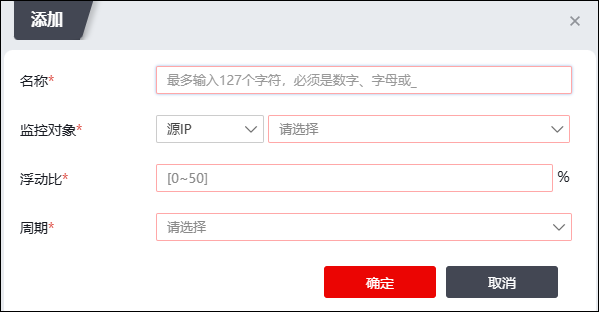

行为分析功能，是指通过检测网络中的异常现象判定内网主机（服务器等其他设备）是否存在未知威胁攻击，并通过日志告警的方式提醒用户进行安全防范。
行为分析策略配置完成后，行为分析引擎首先通过收集并记录被监控设备的初始状态（监测项包括当前新建连接速率、当前并发连接数以及当前流量速率），智能创建基准周期行为库，该基准周期行为库并非不变，而是通过当前基准周期行为库和监控周期(下一个周期)的行为表现进行分析对比，自动学习生成新的基准周期行为库。如果监控周期相对于最新自动生成的基准周期行为库浮动比超过或低于行为分析策略设置的阈值，防火墙则会立即产生未知威胁日志告警，通知用户其网络环境中可能存在未知威胁攻击。
| 步骤1 | 选择 ，如下图所示。 |

| 步骤2 | 点击『添加』按钮，添加行为分析策略，如下图所示。 |

各项参数的具体说明如下表所示。
参数 |
说明 |
|---|---|
名称 |
必填项，设置标识此行为分析的名称。 |
监控对象 |
必选项，设置行为监控的源地址或目的地址的地址对象名称。支持主机地址、范围地址以及子网地址对象类型。 |
浮动比 |
必填项，设置周期流量行为相对于基准周期流量行为的可接受浮动比，若超过或低于了设置的浮动比，则会产生未知威胁日志告警。取值范围：0-50。 |
周期 |
必选项，设置流量行为监控周期，包括：一天、一周、一月。 |
| 步骤3 | 点击【确定】按钮完成行为分析策略配置。 |
| 步骤4 | 行为展示。 |
行为展示是指根据行为分析策略，提供设置周期内的防火墙流量行为趋势，查看行为分析结果展示的操作请参见 行为分析。